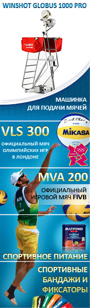
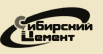
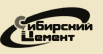

- Все новости
- Чемпионат России
- Кубок России
- Еврокубки
- Сборные
- Пляжный волейбол
- Новости ВФВ
- Трансферы
- Лента новостей
- Обзор прессы
Реклама

-
«Чемпионат.com». Мировая лига. Самые яркие финалы
Продолжая исторический экскурс по Мировой лиге, «Чемпионат.com» вспоминает самые выдающиеся и громкие финалы турнира. -
Андрей Воронков: Бразилия – лучший соперник для дебюта
Команда-династия: такое определение часто дают нашей сборной, имея в виду то, что россияне могут на долгое время стать главенствующей силой в мировом волейболе. После дебютного матча Андрея Воронкова наш корреспондент считает, наша команда – династия и в смысле преемственности поколений игроков и тренеров. -
Желтый пресс
Андрей Воронков посмотрел своих подопечных в матче против одной из лучших волейбольных сборных. В результате Сергей Макаров получил по голове, Дмитрий Мусэрский хорошо размялся, Павлов дал сольный концерт, а сборная России уступила в четырех сетах. -
Дмитрий Мусэрский: С самого начала Олимпиады чувствовал, что Алекно переведет меня в диагональные
Один из главных творцов победы над Бразилией в олимпийском финале-2012 в выходные против южноамериканцев не сыграл. Зато Дмитрий МУСЭРСКИЙ ответил на вопросы «СЭ» - в ранге обладателя Приза Кузнецова, которым ежегодно награждается лучший волейболист чемпионата России по версии «СЭ». -
Раз Бразилия – значит, пять сетов
В субботу и воскресенье в Москве мужская сборная России провела два первых товарищеских матча под руководством своего нового главного тренера Андрея Воронкова. И не с кем-нибудь, а с самими бразильцами. -
«Чемпионат.com». Аналогия напрашивается сама собой
Спустя девять месяцев после лондонских Игр мужские сборные России и Бразилии сыграли между собой в преддверии Мировой лиги. -
В Волейграде «лепят» чемпионов (интервью Андрея ГОРБЕНКО)
Все более популярным становится центр ВФВ в Витязево: жилые корпуса и спортивные площадки не пустуют никогда. -
Бразилия – Россия: итог прежний, игра иная
Женская сборная России проиграла в финале турнира в Монтре сборной Бразилии. Это был второй матч россиянок и бразильянок на турнире в Швейцарии. Счет для нас прежний – 0:3, но игра получилось иной, чем на стадии группового этапа. -
Волейбол на ТВ
Прямые трансляции и премьерные показы волейбольных матчей различных турниров, тематические волейбольные программы на ТВ и официальных интернет-ТВ. -
Контрольный матч. Мужчины. Россия – Бразилия – 1:3 (дополнительный сет – 25:20)
В рамках подготовки к своему старту в Мировой лиге мужская сборная России провела контрольный матч с Бразилией и уступила в четырех сетах. По взаимной договоренности сторон был сыгран дополнительный, пятый счет до 25 очков – 25:20 в пользу России.


 
